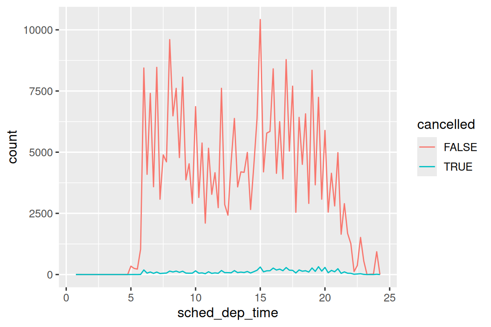

10 Análisis exploratorio de datos
10.1 Introducción
Este capítulo le mostrará cómo usar la visualización y la transformación para explorar sus datos de manera sistemática, una tarea que los estadísticos llaman análisis exploratorio de datos, o EDA para abreviar, Exploratory Data Analysis. EDA es un ciclo iterativo. Tú:
Genera preguntas sobre tus datos.
Busque respuestas visualizando, transformando y modelando sus datos.
Use lo que aprendió para refinar sus preguntas y/o generar nuevas preguntas.
EDA no es un proceso formal con un conjunto estricto de reglas. Más que nada, EDA es un estado de ánimo. Durante las fases iniciales de EDA, debe sentirse libre de investigar cada idea que se le ocurra. Algunas de estas ideas funcionarán y otras serán callejones sin salida. A medida que continúe su exploración, se concentrará en algunas ideas particularmente productivas que eventualmente escribirá y comunicará a otros.
EDA es una parte importante de cualquier análisis de datos, incluso si las principales preguntas de investigación se le entregan en bandeja, porque siempre necesita investigar la calidad de sus datos. La limpieza de datos es solo una aplicación de EDA: hace preguntas sobre si sus datos cumplen con sus expectativas o no. Para realizar la limpieza de datos, deberá implementar todas las herramientas de EDA: visualización, transformación y modelado.
10.1.1 Requisitos previos
En este capítulo, combinaremos lo que ha aprendido sobre dplyr y ggplot2 para hacer preguntas de forma interactiva, responderlas con datos y luego hacer nuevas preguntas.
10.2 Preguntas
“No hay preguntas estadísticas rutinarias, solo rutinas estadísticas cuestionables.” — Sir David Cox
“Es mucho mejor una respuesta aproximada a la pregunta correcta, que a menudo es vaga, que una respuesta exacta a la pregunta equivocada, que siempre se puede precisar.” — John Tukey
Su objetivo durante EDA es desarrollar una comprensión de sus datos. La forma más fácil de hacer esto es usar preguntas como herramientas para guiar su investigación. Cuando hace una pregunta, la pregunta enfoca su atención en una parte específica de su conjunto de datos y lo ayuda a decidir qué gráficos, modelos o transformaciones hacer.
EDA es fundamentalmente un proceso creativo. Y como la mayoría de los procesos creativos, la clave para hacer preguntas de calidad es generar una gran cantidad de preguntas. Es difícil hacer preguntas reveladoras al comienzo de su análisis porque no sabe qué información se puede obtener de su conjunto de datos. Por otro lado, cada nueva pregunta que haga lo expondrá a un nuevo aspecto de sus datos y aumentará sus posibilidades de hacer un descubrimiento. Puede profundizar rápidamente en las partes más interesantes de sus datos, y desarrollar un conjunto de preguntas que invitan a la reflexión, si hace un seguimiento de cada pregunta con una nueva pregunta basada en lo que encuentre.
No hay una regla sobre qué preguntas debe hacer para guiar su investigación. Sin embargo, dos tipos de preguntas siempre serán útiles para hacer descubrimientos dentro de sus datos. Puede redactar libremente estas preguntas como:
¿Qué tipo de variación ocurre dentro de mis variables?
¿Qué tipo de covariación ocurre entre mis variables?
El resto de este capítulo analizará estas dos preguntas. Explicaremos qué son la variación y la covariación, y le mostraremos varias formas de responder cada pregunta.
10.3 Variación
Variación es la tendencia de los valores de una variable a cambiar de una medida a otra. Puedes ver la variación fácilmente en la vida real; si mide cualquier variable continua dos veces, obtendrá dos resultados diferentes. Esto es cierto incluso si mide cantidades que son constantes, como la velocidad de la luz. Cada una de sus medidas incluirá una pequeña cantidad de error que varía de una medida a otra. Las variables también pueden variar si mide diferentes sujetos (por ejemplo, el color de los ojos de diferentes personas) o en diferentes momentos (por ejemplo, los niveles de energía de un electrón en diferentes momentos). Cada variable tiene su propio patrón de variación, que puede revelar información interesante sobre cómo varía entre mediciones en la misma observación, así como entre observaciones. La mejor forma de comprender ese patrón es visualizar la distribución de los valores de la variable, que aprendiste en Capítulo 1.
Comenzaremos nuestra exploración visualizando la distribución de pesos (quilates carat) de ~54,000 diamantes del conjunto de datos diamonds. Dado que carat es una variable numérica, podemos usar un histograma:
ggplot(diamonds, aes(x = carat)) +
geom_histogram(binwidth = 0.5)Ahora que puede visualizar la variación, ¿qué debe buscar en sus gráficos? ¿Y qué tipo de preguntas de seguimiento debe hacer? Hemos reunido una lista a continuación de los tipos de información más útiles que encontrará en sus gráficos, junto con algunas preguntas de seguimiento para cada tipo de información. La clave para hacer buenas preguntas de seguimiento será confiar en su curiosidad (¿Sobre qué quiere aprender más?) así como en su escepticismo (¿Cómo podría ser engañoso?).
10.3.1 Valores típicos
Tanto en los gráficos de barras como en los histogramas, las barras altas muestran los valores comunes de una variable y las barras más cortas muestran los valores menos comunes. Los lugares que no tienen barras revelan valores que no se vieron en sus datos. Para convertir esta información en preguntas útiles, busque cualquier cosa inesperada:
¿Qué valores son los más comunes? ¿Por qué?
¿Qué valores son raros? ¿Por qué? ¿Eso coincide con sus expectativas?
¿Puedes ver algún patrón inusual? ¿Qué podría explicarlos?
Echemos un vistazo a la distribución de quilates, carat, para diamantes más pequeños.
smaller <- diamonds |>
filter(carat < 3)
ggplot(smaller, aes(x = carat)) +
geom_histogram(binwidth = 0.01)Este histograma sugiere varias preguntas interesantes:
¿Por qué hay más diamantes en quilates enteros y fracciones comunes de quilates?
¿Por qué hay más diamantes ligeramente a la derecha de cada pico que ligeramente a la izquierda de cada pico?
Las visualizaciones también pueden revelar grupos, lo que sugiere que existen subgrupos en sus datos. Para comprender los subgrupos, pregunte:
¿En qué se parecen las observaciones dentro de cada subgrupo?
¿En qué se diferencian entre sí las observaciones en grupos separados?
¿Cómo puedes explicar o describir los clusters?
¿Por qué la apariencia de los clústeres podría ser engañosa?
Algunas de estas preguntas se pueden responder con los datos, mientras que otras requerirán experiencia en el dominio de los datos. Muchos de ellos le pedirán que explore una relación entre variables, por ejemplo, para ver si los valores de una variable pueden explicar el comportamiento de otra variable. Llegaremos a eso en breve.
10.3.2 Valores inusuales
Los valores atípicos son observaciones que son inusuales; puntos de datos que no parecen ajustarse al patrón. A veces, los valores atípicos son errores de entrada de datos, a veces son simplemente valores en los extremos que se observaron en esta recopilación de datos, y otras veces sugieren nuevos descubrimientos importantes. Cuando tiene muchos datos, los valores atípicos a veces son difíciles de ver en un histograma. Por ejemplo, tome la distribución de la variable y del conjunto de datos de diamantes. La única evidencia de valores atípicos son los límites inusualmente amplios en el eje x.
ggplot(diamonds, aes(x = y)) +
geom_histogram(binwidth = 0.5)Hay tantas observaciones en los contenedores comunes que los contenedores raros son muy cortos, por lo que es muy difícil verlos (aunque tal vez si miras fijamente a 0 verás algo). Para que sea más fácil ver los valores inusuales, necesitamos ampliar los valores pequeños del eje y con coord_cartesian():
ggplot(diamonds, aes(x = y)) +
geom_histogram(binwidth = 0.5) +
coord_cartesian(ylim = c(0, 50))coord_cartesian() también tiene un argumento xlim() para cuando necesite hacer zoom en el eje x. ggplot2 también tiene funciones xlim() y ylim() que funcionan de forma ligeramente diferente: desechan los datos fuera de los límites.
Esto nos permite ver que hay tres valores inusuales: 0, ~30 y ~60. Los sacamos con dplyr:
unusual <- diamonds |>
filter(y < 3 | y > 20) |>
select(price, x, y, z) |>
arrange(y)
unusual
#> # A tibble: 9 × 4
#> price x y z
#> <int> <dbl> <dbl> <dbl>
#> 1 5139 0 0 0
#> 2 6381 0 0 0
#> 3 12800 0 0 0
#> 4 15686 0 0 0
#> 5 18034 0 0 0
#> 6 2130 0 0 0
#> 7 2130 0 0 0
#> 8 2075 5.15 31.8 5.12
#> 9 12210 8.09 58.9 8.06La variable y mide una de las tres dimensiones de estos diamantes, en mm. Sabemos que los diamantes no pueden tener un ancho de 0 mm, por lo que estos valores deben ser incorrectos. Al hacer EDA, hemos descubierto datos faltantes que estaban codificados como 0, que nunca hubiéramos encontrado simplemente buscando NAs. En el futuro, podríamos optar por volver a codificar estos valores como “NA” para evitar cálculos engañosos. También podemos sospechar que las medidas de 32 mm y 59 mm son inverosímiles: esos diamantes miden más de una pulgada de largo, ¡pero no cuestan cientos de miles de dólares!
Es una buena práctica repetir su análisis con y sin los valores atípicos. Si tienen un efecto mínimo en los resultados y no puede averiguar por qué están ahí, es razonable omitirlos y continuar. Sin embargo, si tienen un efecto sustancial en sus resultados, no debe dejarlos sin justificación. Deberá averiguar qué los causó (por ejemplo, un error de ingreso de datos) y revelar que los eliminó en su informe.
10.3.3 Ejercicios
Explore la distribución de cada una de las variables
x,yyzendiamantes. ¿Qué aprendes? Piensa en un diamante y en cómo podrías decidir qué dimensión es la longitud, el ancho y la profundidad.Explora la distribución del precio
price. ¿Descubriste algo inusual o sorprendente? (Sugerencia: piense detenidamente en elbinwidthy asegúrese de probar una amplia gama de valores).¿Cuántos diamantes son de 0,99 quilates? ¿Cuántos son de 1 quilate? ¿Cuál crees que es la causa de la diferencia?
Compare y contraste
coord_cartesian()frente axlim()oylim()al hacer zoom en un histograma. ¿Qué sucede si dejasbinwidthsin configurar? ¿Qué sucede si intenta hacer zoom para que solo se muestre la mitad de una barra?
10.4 Valores inusuales
Si ha encontrado valores inusuales en su conjunto de datos y simplemente desea continuar con el resto de su análisis, tiene dos opciones.
-
Suelta toda la fila con los valores extraños:
No recomendamos esta opción porque un valor no válido no implica que todos los demás valores de esa observación también lo sean. Además, si tiene datos de baja calidad, en el momento en que haya aplicado este enfoque a cada variable, es posible que no le queden datos.
-
En su lugar, recomendamos reemplazar los valores inusuales con valores faltantes. La forma más fácil de hacer esto es usar
mutate()para reemplazar la variable con una copia modificada. Puedes usar la funciónif_else()para reemplazar valores inusuales conNA:
It’s not obvious where you should plot missing values, so ggplot2 doesn’t include them in the plot, but it does warn that they’ve been removed:
ggplot(diamonds2, aes(x = x, y = y)) +
geom_point()
#> Warning: Removed 9 rows containing missing values or values outside the scale range
#> (`geom_point()`).Para suprimir esa advertencia, configure na.rm = TRUE:
ggplot(diamonds2, aes(x = x, y = y)) +
geom_point(na.rm = TRUE)Otras veces, desea comprender qué hace que las observaciones con valores faltantes sean diferentes a las observaciones con valores registrados. Por ejemplo, en nycflights13::flights1, los valores faltantes en la variable dep_time indican que el vuelo fue cancelado. Por lo tanto, es posible que desee comparar los horarios de salida programados para los horarios cancelados y no cancelados. Puede hacer esto creando una nueva variable, usando is.na() para verificar si falta dep_time.
nycflights13::flights |>
mutate(
cancelled = is.na(dep_time),
sched_hour = sched_dep_time %/% 100,
sched_min = sched_dep_time %% 100,
sched_dep_time = sched_hour + (sched_min / 60)
) |>
ggplot(aes(x = sched_dep_time)) +
geom_freqpoly(aes(color = cancelled), binwidth = 1/4)
Sin embargo, esta gráfica no es muy buena porque hay muchos más vuelos no cancelados que vuelos cancelados. En la siguiente sección exploraremos algunas técnicas para mejorar esta comparación.
10.4.1 Ejercicios
¿Qué sucede con los valores faltantes en un histograma? ¿Qué sucede con los valores faltantes en un gráfico de barras? ¿Por qué hay una diferencia en cómo se manejan los valores perdidos en histogramas y gráficos de barras?
Vuelva a crear el diagrama de frecuencia de
scheduled_dep_timecoloreado según si el vuelo se canceló o no. También facetado por la variablecancelled. Experimente con diferentes valores de la variablescalesen la función de creación de facetas para mitigar el efecto de más vuelos no cancelados que vuelos cancelados.
10.5 Covariación
Si la variación describe el comportamiento dentro de una variable, la covariación describe el comportamiento entre variables. Covariación es la tendencia de los valores de dos o más variables a variar juntos de manera relacionada. La mejor manera de detectar la covariación es visualizar la relación entre dos o más variables.
10.5.1 Una variable categórica y una numérica
Por ejemplo, exploremos cómo varía el precio de un diamante con su calidad (medida por su corte cut) usando geom_freqpoly():
ggplot(diamonds, aes(x = price)) +
geom_freqpoly(aes(color = cut), binwidth = 500, linewidth = 0.75)Tenga en cuenta que ggplot2 usa una escala de colores ordenada por cut porque está definida como una variable de factor ordenada en los datos. Aprenderá más sobre estos en Sección 16.6.
La apariencia predeterminada de geom_freqpoly() no es tan útil aquí porque la altura, determinada por el conteo general, difiere mucho entre los cortes, cut, lo que dificulta ver las diferencias en las formas de sus distribuciones.
Para facilitar la comparación, necesitamos intercambiar lo que se muestra en el eje y. En lugar de mostrar el conteo, mostraremos la densidad, que es el conteo estandarizado para que el área debajo de cada polígono de frecuencia sea uno.
ggplot(diamonds, aes(x = price, y = after_stat(density))) +
geom_freqpoly(aes(color = cut), binwidth = 500, linewidth = 0.75)![Un polígono de frecuencias de densidades de precios de diamantes donde cada corte de quilate (Regular, Bueno, Muy bueno, Premium e Ideal) se representa con un línea de color diferente. El eje x va de 0 a 20000. Las líneas se superponen mucho, lo que sugiere distribuciones de densidad similares de precios de diamantes. Una característica notable es que todos, excepto los diamantes Regulares, tienen picos altos. alrededor de un precio de 1500 y los diamantes Regulares tienen un promedio más alto que otros.](EDA_files/figure-html/unnamed-chunk-16-1.png)
Tenga en cuenta que estamos asignando la densidad a y, pero dado que density no es una variable en el conjunto de datos diamonds, primero debemos calcularla. Usamos la función after_stat() para hacerlo.
Hay algo bastante sorprendente en esta gráfica: ¡parece que los diamantes justos (la calidad más baja) tienen el precio promedio más alto! Pero tal vez eso se deba a que los polígonos de frecuencia son un poco difíciles de interpretar: están sucediendo muchas cosas en este gráfico.
Una gráfica visualmente más simple para explorar esta relación es usar diagramas de caja uno al lado del otro.
ggplot(diamonds, aes(x = cut, y = price)) +
geom_boxplot()Vemos mucha menos información sobre la distribución, pero los diagramas de caja son mucho más compactos, por lo que podemos compararlos más fácilmente (y encajar más en un diagrama). ¡Es compatible con el hallazgo contrario a la intuición de que los diamantes de mejor calidad suelen ser más baratos! En los ejercicios, se le desafiará a averiguar por qué.
cut es un factor ordenado: regular es peor que bueno, que es peor que muy bueno y así sucesivamente. Muchas variables categóricas no tienen ese orden intrínseco, por lo que es posible que desee reordenarlas para que la visualización sea más informativa. Una forma de hacerlo es con fct_reorder(). Aprenderá más sobre esa función en Sección 16.4, pero queríamos darle una vista previa rápida aquí porque es muy útil. Por ejemplo, tome la variable class en el conjunto de datos mpg. Puede que le interese saber cómo varía el kilometraje en carretera según las clases:
ggplot(mpg, aes(x = class, y = hwy)) +
geom_boxplot()Para que la tendencia sea más fácil de ver, podemos reordenar class en función del valor medio de carretera hwy:
ggplot(mpg, aes(x = fct_reorder(class, hwy, median), y = hwy)) +
geom_boxplot()Si tiene nombres de variables largos, geom_boxplot() funcionará mejor si lo gira 90°. Puede hacerlo intercambiando las asignaciones estéticas x e y.
ggplot(mpg, aes(x = hwy, y = fct_reorder(class, hwy, median))) +
geom_boxplot()10.5.1.1 Ejercicios
Utilice lo que ha aprendido para mejorar la visualización de las horas de salida de los vuelos cancelados frente a los no cancelados.
Con base en EDA, ¿qué variable en el conjunto de datos de diamantes parece ser la más importante para predecir el precio de un diamante? ¿Cómo se correlaciona esa variable con el corte? ¿Por qué la combinación de esas dos relaciones hace que los diamantes de menor calidad sean más caros?
En lugar de intercambiar las variables x e y, agregue
coord_flip()como una nueva capa al diagrama de caja vertical para crear uno horizontal. ¿Cómo se compara esto con intercambiar las variables?Un problema con los diagramas de caja es que se desarrollaron en una era de conjuntos de datos mucho más pequeños y tienden a mostrar una cantidad prohibitivamente grande de “valores atípicos”. Un enfoque para remediar este problema es la gráfica de valores de letras. Instale el paquete lvplot e intente usar
geom_lv()para mostrar la distribución del precio frente al corte. ¿Qué aprendes? ¿Cómo interpretas las gráficas?Cree una visualización de los precios de los diamantes frente a una variable categórica del conjunto de datos
diamoondsusandogeom_violin(), luegogeom_histogram()facetado, luegogeom_freqpoly()coloreado y luegogeom_density()coloreado. Compara y contrasta las cuatro gráficas. ¿Cuáles son los pros y los contras de cada método para visualizar la distribución de una variable numérica en función de los niveles de una variable categórica?Si tiene un conjunto de datos pequeño, a veces es útil usar
geom_jitter()para evitar el trazado excesivo y ver más fácilmente la relación entre una variable continua y categórica. El paquete ggbeeswarm proporciona una serie de métodos similares ageom_jitter(). Enumérelos y describa brevemente lo que hace cada uno.
10.5.2 Dos variables categóricas
Para visualizar la covariación entre variables categóricas, deberá contar el número de observaciones para cada combinación de niveles de estas variables categóricas. Una forma de hacerlo es confiar en el geom_count() incorporado:
ggplot(diamonds, aes(x = cut, y = color)) +
geom_count()El tamaño de cada círculo en la gráfica muestra cuántas observaciones ocurrieron en cada combinación de valores. La covariación aparecerá como una fuerte correlación entre valores específicos de x y valores específicos de y.
Otro enfoque para explorar la relación entre estas variables es calcular los recuentos con dplyr:
diamonds |>
count(color, cut)
#> # A tibble: 35 × 3
#> color cut n
#> <ord> <ord> <int>
#> 1 D Fair 163
#> 2 D Good 662
#> 3 D Very Good 1513
#> 4 D Premium 1603
#> 5 D Ideal 2834
#> 6 E Fair 224
#> # ℹ 29 more rowsLuego visualiza con geom_tile() y la estética de relleno:
Si las variables categóricas no están ordenadas, es posible que desee utilizar el paquete de seriación para reordenar simultáneamente las filas y las columnas a fin de revelar patrones interesantes con mayor claridad. Para gráficas más grandes, es posible que desee probar el paquete heatmaply, que crea gráficas interactivas.
10.5.2.1 Ejercicios
¿Cómo podría cambiar la escala del conjunto de datos de conteo anterior para mostrar más claramente la distribución del corte dentro del color o el color dentro del corte?
¿Qué perspectivas de datos diferentes obtiene con un gráfico de barras segmentado si el color se asigna a la estética
xycutse asigna a la estéticafill? Calcular las cuentas que caen en cada uno de los segmentos.Utilice
geom_tile()junto con dplyr para explorar cómo varían los retrasos promedio en la salida de los vuelos según el destino y el mes del año. ¿Qué hace que la trama sea difícil de leer? ¿Cómo podrías mejorarlo?
10.5.3 Dos variables numericas
Ya has visto una excelente forma de visualizar la covariación entre dos variables numéricas: dibujar un diagrama de dispersión con geom_point(). Puede ver la covariación como un patrón en los puntos. Por ejemplo, puedes ver una relación positiva entre el tamaño en quilates y el precio de un diamante: los diamantes con más quilates tienen un precio más alto. La relación es exponencial.
ggplot(smaller, aes(x = carat, y = price)) +
geom_point()(En esta sección, usaremos el conjunto de datos smaller para centrarnos en la mayor parte de los diamantes que tienen menos de 3 quilates)
Los diagramas de dispersión se vuelven menos útiles a medida que crece el tamaño de su conjunto de datos, porque los puntos comienzan a superponerse y se acumulan en áreas de negro uniforme, lo que dificulta juzgar las diferencias en la densidad de los datos en el espacio bidimensional, además de hacerlo difícil detectar la tendencia. Ya ha visto una forma de solucionar el problema: usar la estética alpha para agregar transparencia.
ggplot(smaller, aes(x = carat, y = price)) +
geom_point(alpha = 1 / 100)Pero usar la transparencia puede ser un desafío para conjuntos de datos muy grandes. Otra solución es usar bin. Previamente usó geom_histogram() y geom_freqpoly() para agrupar en una dimensión. Ahora aprenderá a usar geom_bin2d() y geom_hex() para agrupar en dos dimensiones.
geom_bin2d() y geom_hex() dividen el plano de coordenadas en contenedores 2d y luego usan un color de relleno para mostrar cuántos puntos caen en cada contenedor. geom_bin2d() crea contenedores rectangulares. geom_hex() crea contenedores hexagonales. Deberá instalar el paquete hexbin para usar geom_hex().
ggplot(smaller, aes(x = carat, y = price)) +
geom_bin2d()
# install.packages("hexbin")
ggplot(smaller, aes(x = carat, y = price)) +
geom_hex()Otra opción es agrupar una variable continua para que actúe como una variable categórica. Luego puede usar una de las técnicas para visualizar la combinación de una variable categórica y continua que aprendió. Por ejemplo, podría agrupar carat y luego, para cada grupo, mostrar un diagrama de caja:
ggplot(smaller, aes(x = carat, y = price)) +
geom_boxplot(aes(group = cut_width(carat, 0.1)))![Diagramas de caja, un al lado de otro, de precio por quilate. Cada diagrama de caja representa diamantes que tienen una diferencia de peso de 0,1 quilates. Los diagramas de caja muestran que como aumentan los quilates aumenta también el precio medio. Además, los diamantes con 1,5 quilates o menos tienen distribuciones de precios sesgadas a la derecha, 1,5 a 2 tienen distribuciones de precios aproximadamente simétricas, y los diamantes que pesan más tienen distribuciones asimétricas a la izquierda. Los diamantes más pequeños y baratos tienen valores atípicos en el extremo superior y los diamantes más caros y más grandes tienen valores atípicos en el extremo inferior.](EDA_files/figure-html/unnamed-chunk-27-1.png)
cut_width(x, ancho), como se usó anteriormente, divide x en contenedores de ancho ancho. De manera predeterminada, los diagramas de caja se ven más o menos iguales (aparte del número de valores atípicos) independientemente de cuántas observaciones haya, por lo que es difícil saber si cada diagrama de caja resume una cantidad diferente de puntos. Una forma de demostrarlo es hacer que el ancho del diagrama de caja sea proporcional al número de puntos con varwidth = TRUE.
10.5.3.1 Ejercicios
En lugar de resumir la distribución condicional con un diagrama de caja, podría usar un polígono de frecuencia. ¿Qué debe tener en cuenta al usar
cut_width()frente acut_number()? ¿Cómo impacta eso en una visualización de la distribución 2d de quilatecaraty precioprice?Visualice la distribución de
quilates, dividida porprecio.¿Cómo se compara la distribución de precios de los diamantes muy grandes con la de los diamantes pequeños? ¿Es como esperabas o te sorprende?
Combine dos de las técnicas que ha aprendido para visualizar la distribución combinada de corte, quilate y precio.
-
Los gráficos bidimensionales revelan valores atípicos que no son visibles en los gráficos unidimensionales. Por ejemplo, algunos puntos en la siguiente gráfica tienen una combinación inusual de valores
xey, lo que hace que los puntos sean atípicos aunque sus valoresxeyparezcan normales cuando se examinan por separado. ¿Por qué un diagrama de dispersión es una mejor visualización que un diagrama en bins para este caso?diamonds |> filter(x >= 4) |> ggplot(aes(x = x, y = y)) + geom_point() + coord_cartesian(xlim = c(4, 11), ylim = c(4, 11)) -
En lugar de crear cuadros de igual ancho con
cut_width(), podríamos crear cuadros que contengan aproximadamente el mismo número de puntos concut_number(). ¿Cuáles son las ventajas y desventajas de este enfoque?ggplot(smaller, aes(x = carat, y = price)) + geom_boxplot(aes(group = cut_number(carat, 20)))
10.6 Patrones y modelos
Si existe una relación sistemática entre dos variables, aparecerá como un patrón en los datos. Si detecta un patrón, pregúntese:
¿Podría este patrón deberse a una coincidencia (es decir, al azar)?
¿Cómo puedes describir la relación implícita en el patrón?
¿Qué tan fuerte es la relación implícita en el patrón?
¿Qué otras variables podrían afectar la relación?
¿Cambia la relación si observa subgrupos individuales de datos?
Los patrones en sus datos brindan pistas sobre las relaciones, es decir, revelan la covariación. Si piensas en la variación como un fenómeno que crea incertidumbre, la covariación es un fenómeno que la reduce. Si dos variables covarían, puede usar los valores de una variable para hacer mejores predicciones sobre los valores de la segunda. Si la covariación se debe a una relación causal (un caso especial), puede usar el valor de una variable para controlar el valor de la segunda.
Los modelos son una herramienta para extraer patrones de los datos. Por ejemplo, considere los datos de los diamantes. Es difícil entender la relación entre corte y precio, porque el corte y el quilate, y el quilate y el precio están estrechamente relacionados. Es posible usar un modelo para eliminar la fuerte relación entre el precio y el quilate para que podamos explorar las sutilezas que quedan. El siguiente código se ajusta a un modelo que predice price a partir de carat y luego calcula los residuos (la diferencia entre el valor predicho y el valor real). Los residuales nos dan una idea del precio del diamante, una vez eliminado el efecto del quilate. Tenga en cuenta que en lugar de utilizar los valores brutos de price y carat, primero los transformamos logarítmicamente y ajustamos un modelo a los valores transformados logarítmicamente. Luego, exponenciamos los residuos para volver a colocarlos en la escala de precios brutos.
library(tidymodels)
diamonds <- diamonds |>
mutate(
log_price = log(price),
log_carat = log(carat)
)
diamonds_fit <- linear_reg() |>
fit(log_price ~ log_carat, data = diamonds)
diamonds_aug <- augment(diamonds_fit, new_data = diamonds) |>
mutate(.resid = exp(.resid))
ggplot(diamonds_aug, aes(x = carat, y = .resid)) +
geom_point()Una vez que haya eliminado la fuerte relación entre el quilate y el precio, puede ver lo que espera en la relación entre el corte y el precio: en relación con su tamaño, los diamantes de mejor calidad son más caros.
ggplot(diamonds_aug, aes(x = cut, y = .resid)) +
geom_boxplot()No estamos discutiendo el modelado en este libro porque comprender qué son los modelos y cómo funcionan es más fácil una vez que tiene a mano las herramientas de organización de datos y programación.
10.7 Resumen
En este capítulo, aprendió una variedad de herramientas para ayudarlo a comprender la variación dentro de sus datos. Ha visto técnicas que funcionan con una sola variable a la vez y con un par de variables. Esto puede parecer una restricción dolorosa si tiene decenas o cientos de variables en sus datos, pero son la base sobre la que se construyen todas las demás técnicas.
En el próximo capítulo, nos centraremos en las herramientas que podemos utilizar para comunicar nuestros resultados.
Recuerda que cuando necesitemos ser explícito sobre el origen de una función (o conjunto de datos), usaremos la forma especial
package::funcion()opackage::conjuntodedatos.↩︎